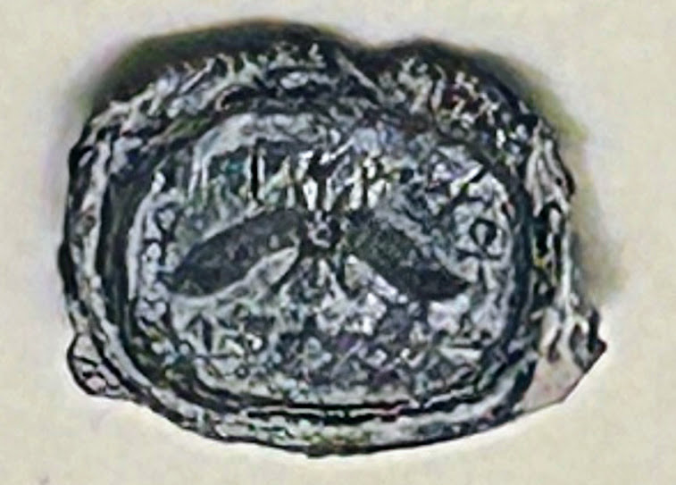

Hezekiah's Royal Seal (Bulla)

- Find Name
- Hezekiah's Royal Seal (Bulla)
- Historical Period
- Iron Age II
- Artifact Date
- c. 727-698 BC
- Date Discovered
- 2009 (published 2015)
- Discovery Location
- Ophel Excavations, Jerusalem, Israel
- Current Location
- Hebrew University of Jerusalem, Jerusalem, Israel
- Timeline Era
- Divided Monarchy
- Description
- A tiny clay seal impression, about 13 mm wide, reading 'Belonging to Hezekiah, [son of] Ahaz, king of Judah,' stamped with a winged sun and ankh symbols. It was found in a royal refuse layer at the Ophel, south of the Temple Mount, and deciphered in 2015.
- Biblical Significance
- This is the first seal impression of a Judean king found in a controlled scientific excavation, and it belonged to the king who prayed as Sennacherib surrounded Jerusalem. Holding Hezekiah's own seal in the record ties the Bible's great deliverance story to a real king's real administration.
- Evidence Class
- Direct
- Interpretations
- Scholars agree the bulla reads ‘Belonging to Hezekiah, son of Ahaz, king of Judah’; it surfaced on the antiquities market, so its exact findspot is unknown.
- Scripture Illuminated
- Related People
- Related Books
- Related Places
- Related Events
Awaiting Review Not yet checked against scholarly sources. Treat its claims as provisional until this entry is reviewed. About verification
Last reviewed: not yet reviewed